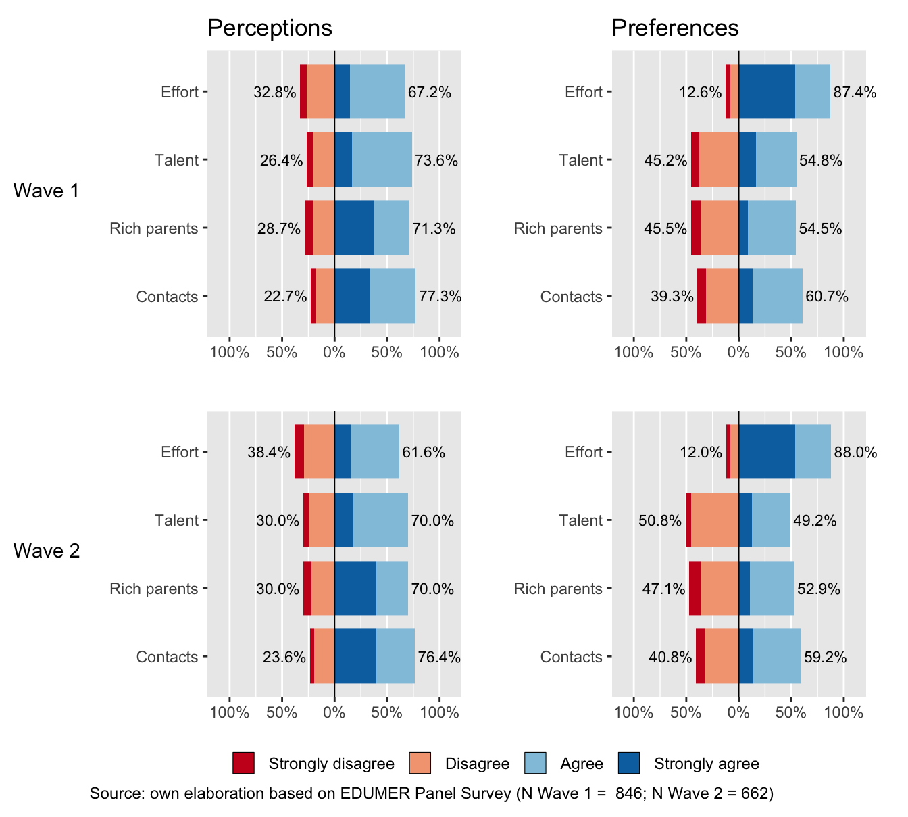
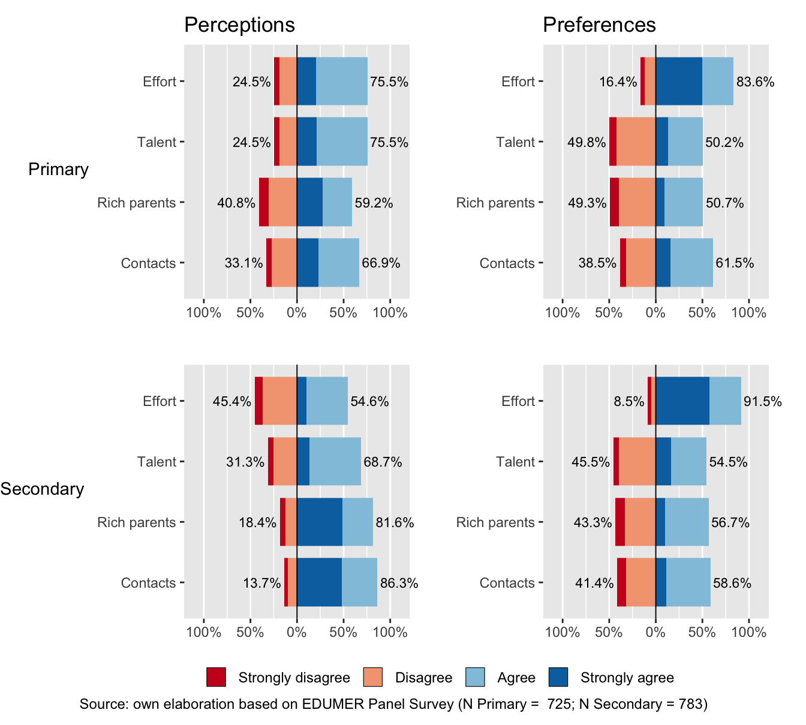

| Wave | Cohort level | N | Mean | SD | Man | Women | Others |
|---|---|---|---|---|---|---|---|
| Wave 1 | Primary | 406 | 11.85 | 0.56 | 195 | 191 | 20 |
| Secondary | 440 | 14.79 | 0.80 | 226 | 195 | 19 | |
| Total | 846 | 13.38 | 1.63 | 421 | 386 | 39 | |
| Wave 2 | Primary | 319 | 12.83 | 0.55 | 161 | 145 | 13 |
| Secondary | 343 | 15.76 | 0.75 | 177 | 158 | 8 | |
| Total | 662 | 14.35 | 1.61 | 338 | 303 | 21 |

Market justice, meritocracy & deservingness
Agenda & work in progress
Juan Carlos Castillo, Andreas Laffert &
Tomás Urzúa
Department of Sociology, University of Chile
Freie Universität Berlin - April 2026
Research problem
Context and motivation
Meritocracy: a distributive system where rewards are expected to reflect individual effort and ability rather than social origin or inherited privilege (Bell, 1972; Young, 1958)
Meritocratic beliefs help legitimize inequality (Castillo et al., 2019; García-Sierra, 2023; Heuer et al., 2020; Mijs, 2021; Sandel, 2020)
- They shape how inequality is perceived and justified
- They are reinforced through social institutions
Context and motivation
Schools are key sites for the formation and development of meritocratic beliefs
- Cultural ideal: effort, achievement, self-improvement, and education as routes to mobility (Chauvin et al., 2026; Darnon, Wiederkehr, et al., 2018; Mijs, 2016)
- Institutional life: grading, tracking, selection, awards, and credentials (Darnon et al., 2023; Resh & Sabbagh, 2017; Traini, 2022)
- Non-meritocratic elements: structural advantages and dual consciousness (Goudeau & Cimpian, 2021; Goudeau & Croizet, 2017; C. Liu & Wang, 2025; Tang et al., 2025)
- Consequences within and beyond school: greater legitimation of unequal outcomes, from grades to income inequality and lower support for redistribution (Batruch et al., 2022; Castillo et al., 2024; Darnon, Smeding, et al., 2018; Wiederkehr et al., 2015)
Research gaps and contributions
The measurement of meritocratic beliefs remains limited in school-based research
Existing scales are still narrow: BSM (Wiederkehr et al., 2015) focuses mainly on effort and opportunity, while Chauvin et al. (2026) centers on perceived meritocracy and blends school with broader social meritocracy
These limitations matter because measurement shapes the validity and interpretation of findings
We address this gap with a multidimensional approach (Castillo et al., 2023) that distinguishes perceptions from preferences, and meritocratic from non-meritocratic principles
Research gaps and contributions
Beyond factorial validity, we test measurement stability across school stages and over time
Measurement invariance is necessary for valid group and longitudinal comparisons (Chen, 2007; Putnick & Bornstein, 2016)
These cohorts capture distinct stages of adolescence, when beliefs about justice and inequality become more complex and school sorting more salient (Henry & Saul, 2006; Resh & Sabbagh, 2014; Sigelman, 2013)
This lets us assess whether meritocratic beliefs remain stable or shift as students encounter the limits of meritocratic ideals (Tang et al., 2025)
This study
- We ask whether students distinguish between meritocratic and non-meritocratic principles, and between perceptions (“what is”) and preferences (“what should be”)
- We also ask whether these dimensions can be measured comparably across age cohorts and over time
\(H1\): Meritocratic beliefs are best represented by the four factors
\(H2–H3\): This four-factor model is invariant across cohorts and longitudinally within students
Method
Participants and processedure
[Panel Survey on Education and Meritocracy (EDUMER)]((https://github.com/educacion-meritocracia/edumer-data), using the 2023 and 2024 student waves
CAWI surveys administered to primary and secondary school students from 9 schools in the Metropolitan and Valparaíso regions of Chile
Wave 1 (N = 846): 386 girls, 421 boys, and 39 identifying as other; \(M_{age}\) = 13.4, \(SD_{age}\) = 1.6
Wave 2 (N = 662): 303 girls, 338 boys, and 21 identifying as other; \(M_{age}\) = 14.4, \(SD_{age}\) = 1.6
Attrition: 22% (78% retention), mainly due to school absenteeism and school transfers
Measures

Measures
- Cohorts: To distinguish educational level across waves in the invariance analyses, we use a cohort indicator defined at each wave (primary vs. secondary school).
Analitycal strategy
Confirmatory Factor Analysis (CFA):
- A four-factor latent model estimated with WLSMV (Kline, 2023)
- Model fit cutoffs (Brown, 2015): \(\text{CFI or TLI} > 0.95\); \(RMSEA < 0.06\); nonsignificant \(\chi^2\) (\(p > 0.05\)), and \(\chi^2/df < 3\)
Analitycal strategy
Measurement invariance: a set of procedures used to assess the comparability of a measurement model (Putnick & Bornstein, 2016; Van De Schoot et al., 2015)
Two types:
Procedure: four sequentially constrained, hierarchical models
- Configural (same factor structure)
- Weak (+ equal factor loadings)
- Strong (+ equal intercepts)
- Strict (+ equal error variances)
- Fit cutoffs (Chen, 2007): CFI (\(\Delta \geq -0.010\)) and RMSEA (\(\Delta \geq 0.0\))
Results
Measurement model

Longitudinal descriptives

Longitudinal invariance
| Model | $\chi^2$ (df) | CFI | RMSEA (90\% CI) | $\Delta \chi^2$ ($\Delta$df) | $\Delta$CFI | $\Delta$RMSEA | Decision |
|---|---|---|---|---|---|---|---|
| Configural | 117.7 (68) | 0.991 | 0.035 (0.024-0.046) | 0 (0) | 0 | 0.000 | Reference |
| Weak | 122.51 (72) | 0.990 | 0.034 (0.024-0.045) | 4.809 (4) | 0 | -0.001 | Accept |
| Strong | 128.53 (80) | 0.991 | 0.032 (0.021-0.042) | 6.02 (8) | 0 | -0.002 | Accept |
| Strict | 130.17 (84) | 0.991 | 0.031 (0.02-0.04) | 1.635 (4) | 0 | -0.002 | Accept |
Cohort descriptives

Cohort invariance
| Model | $\chi^2$ (df) | CFI | RMSEA (90\% CI) | $\Delta \chi^2$ ($\Delta$df) | $\Delta$CFI | $\Delta$RMSEA | Decision |
|---|---|---|---|---|---|---|---|
| Configural | 24.95 (26) | 0.993 | 0.036 (0.009-0.057) | 0 (0) | 0.000 | 0.000 | Reference |
| Tresholds | 57.56 (42) | 0.980 | 0.049 (0.033-0.064) | 43.875 (16) *** | -0.013 | 0.013 | Reject |
| Tresholds + Loadings | 72.35 (46) | 0.973 | 0.053 (0.039-0.067) | 17.075 (4) ** | -0.006 | 0.005 | Reject |
Discussion and conclusions
Discussion: meritocracy at schools
\(H1\) is supported: students already organize meritocratic beliefs into four distinct dimensions
They distinguish both between “what is” and “what should be,” and between merit and privilege
Merit and non-merit do not work as opposites: recognizing privilege does not eliminate support for merit (Mijs, 2026; Tang et al., 2025)
This suggests that the link between meritocratic beliefs and inequality legitimization is likely dimension-specific (Castillo et al., 2023)
Discussion: measurement invariance
\(H2\) is supported: the scale is longitudinally stable, so within-student change over time can be interpreted substantively
- This strengthens the basis for studying developmental change in meritocratic beliefs
\(H3\) is not supported: the scale is not fully invariant across educational levels
- Perceived meritocracy seems to shift across school stages, suggesting that older students see effort as less clearly rewarded than younger students do (Tang et al., 2025)
Conclusions
Students already distinguish between perceptions and preferences, and between meritocratic and non-meritocratic principles
Merit endorsement can coexist with recognition of privilege, so meritocratic beliefs are better understood as multidimensional rather than one-dimensional
The scale is stable over time, enabling valid longitudinal analysis, but not fully across school stages, which limits cross-cohort comparison
Future research should refine the measure and examine how these beliefs shape school experiences, inequality legitimization, and attitudes toward educational opportunity
References
Batruch, A., Jetten, J., Van de Werfhorst, H., Darnon, C., & Butera, F. (2022). Belief in School Meritocracy and the Legitimization of Social and Income Inequality. Social Psychological and Personality Science, 194855062211110. https://doi.org/10.1177/19485506221111017
Bell, D. (1972). On equality: I. Meritocracy and equality. The Public Interest, 29, 29–68.
Brown, T. A. (2015). Confirmatory factor analysis for applied research (Second edition). New York London: The Guilford Press.
Castillo, J. C., Iturra, J., Maldonado, L., Atria, J., & Meneses, F. (2023). A Multidimensional Approach for Measuring Meritocratic Beliefs: Advantages, Limitations and Alternatives to the ISSP Social Inequality Survey. International Journal of Sociology, 53(6), 448–472. https://doi.org/10.1080/00207659.2023.2274712
Castillo, J. C., Torres, A., Atria, J., & Maldonado, L. (2019). Meritocracia y desigualdad económica: Percepciones, preferencias e implicancias. Revista Internacional de Sociología, 77(1), 117. https://doi.org/10.3989/ris.2019.77.1.17.114
Chauvin, B., Rauscher, C., Saidah, B., & Louvet, E. (2026). School meritocracy: A multidimensional construct? Evidence from the development of a school meritocracy scale by exploratory and confirmatory bifactor modeling. Current Psychology, 45(5), 519. https://doi.org/10.1007/s12144-026-09134-1
Chen, F. F. (2007). Sensitivity of Goodness of Fit Indexes to Lack of Measurement Invariance. Structural Equation Modeling: A Multidisciplinary Journal, 14(3), 464–504. https://doi.org/10.1080/10705510701301834
Darnon, C., Jury, M., Goudeau, S., & Portex, M. (2023). Competitive and cooperative practices in education: How teachers’ beliefs in school meritocracy are related to their daily practices with students. Social Psychology of Education, 26(6), 1789–1805. https://doi.org/10.1007/s11218-023-09824-9
Darnon, C., Smeding, A., & Redersdorff, S. (2018). Belief in school meritocracy as an ideological barrier to the promotion of equality. European Journal of Social Psychology, 48(4), 523–534. https://doi.org/10.1002/ejsp.2347
Darnon, C., Wiederkehr, V., Dompnier, B., & Martinot, D. (2018). “Where there is a will, there is a way”: Belief in school meritocracy and the social-class achievement gap. British Journal of Social Psychology, 57(1), 250–262. https://doi.org/10.1111/bjso.12214
Davidov, E., Meuleman, B., Cieciuch, J., Schmidt, P., & Billiet, J. (2014). Measurement Equivalence in Cross-National Research. Annual Review of Sociology, 40(Volume 40, 2014), 55–75. https://doi.org/10.1146/annurev-soc-071913-043137
García-Sierra, A. (2023). The dark side of meritocratic beliefs: Is believing in meritocracy detrimental to individuals from low socioeconomic backgrounds? Social Justice Research, 36(4), 385–409. https://doi.org/10.1007/s11211-023-00413-x
Goudeau, S., & Cimpian, A. (2021). How Do Young Children Explain Differences in the Classroom? Implications for Achievement, Motivation, and Educational Equity. Perspectives on Psychological Science, 16(3), 533–552. https://doi.org/10.1177/1745691620953781
Henry, P. J., & Saul, A. (2006). The Development of System Justification in the Developing World. Social Justice Research, 19(3), 365–378. https://doi.org/10.1007/s11211-006-0012-x
Heuer, J.-O., Lux, T., Mau, S., & Zimmermann, K. (2020). Legitimizing Inequality: The Moral Repertoires of Meritocracy in Four Countries. Comparative Sociology, 19(4-5), 542–584. https://doi.org/10.1163/15691330-BJA10017
Kline, R. B. (2023). Principles and Practice of Structural Equation Modeling. Guilford Publications.
Liu, C., & Wang, J. (2025). Does Education Legitimise Inequality? Comparative Analysis of Income Inequality, Education, and Meritocratic Beliefs. The British Journal of Sociology, 1468–4446.70029. https://doi.org/10.1111/1468-4446.70029
Liu, Y., Millsap, R. E., West, S. G., Tein, J.-Y., Tanaka, R., & Grimm, K. J. (2017). Testing measurement invariance in longitudinal data with ordered-categorical measures. Psychological Methods, 22(3), 486–506. https://doi.org/10.1037/met0000075
Mijs, J. (2016). The Unfulfillable Promise of Meritocracy: Three Lessons and Their Implications for Justice in Education. Social Justice Research, 29(1), 14–34. https://doi.org/10.1007/s11211-014-0228-0
Mijs, J. (2021). The paradox of inequality: Income inequality and belief in meritocracy go hand in hand. Socio-Economic Review, 19(1), 7–35. https://doi.org/10.1093/ser/mwy051
Mijs, J. (2026). Visualizing Belief in Merit and Privilege, 1930 to 2020: Rejoinder. Socius: Sociological Research for a Dynamic World, 12, 23780231261426413. https://doi.org/10.1177/23780231261426413
Putnick, D. L., & Bornstein, M. H. (2016). Measurement invariance conventions and reporting: The state of the art and future directions for psychological research. Developmental Review, 41, 71–90. https://doi.org/10.1016/j.dr.2016.06.004
Resh, N., & Sabbagh, C. (2014). Sense of justice in school and civic attitudes. Social Psychology of Education, 17(1), 51–72. https://doi.org/10.1007/s11218-013-9240-8
Resh, N., & Sabbagh, C. (2017). Sense of justice in school and civic behavior. Social Psychology of Education, 20(2), 387–409. https://doi.org/10.1007/s11218-017-9375-0
Sandel, M. J. (2020). The tyranny of merit: What’s become of the common good? (First edition). New York: Farrar, Straus and Giroux.
Sigelman, C. K. (2013). Age Differences in Perceptions of Rich and Poor People: Is It Skill or Luck? Social Development, 22(1), 1–18. https://doi.org/10.1111/sode.12000
Tang, M., Li, A., & Wu, X. (2025). Meritocratic Myth in Mind? Socioeconomic Backgrounds and Shifting Beliefs about Meritocracy among College Students in China. Sociology of Education, 00380407251360432. https://doi.org/10.1177/00380407251360432
Traini, C. (2022). The stratification of education systems and social background inequality of educational opportunity. International Journal of Comparative Sociology, 63(1-2), 10–29. https://doi.org/10.1177/00207152211033015
Van De Schoot, R., Schmidt, P., De Beuckelaer, A., Lek, K., & Zondervan-Zwijnenburg, M. (2015). Editorial: Measurement Invariance. Frontiers in Psychology, 6. https://doi.org/10.3389/fpsyg.2015.01064
Wiederkehr, V., Bonnot, V., Krauth-Gruber, S., & Darnon, C. (2015). Belief in school meritocracy as a system-justifying tool for low status students. Frontiers in Psychology, 6.
Young, M. (1958). The rise of the meritocracy. New Brunswick, N.J., U.S.A: Transaction Publishers.